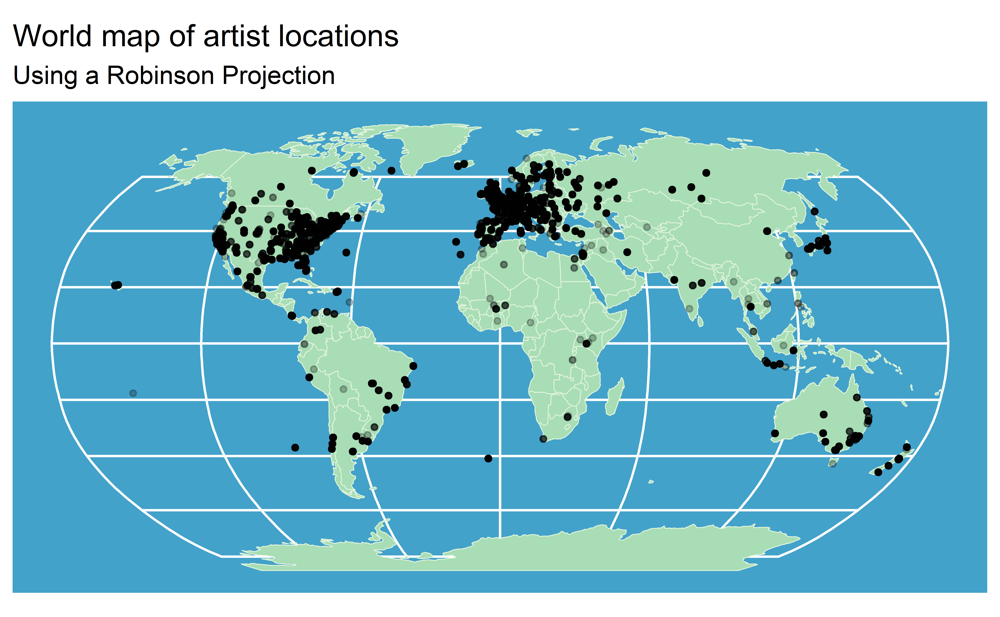
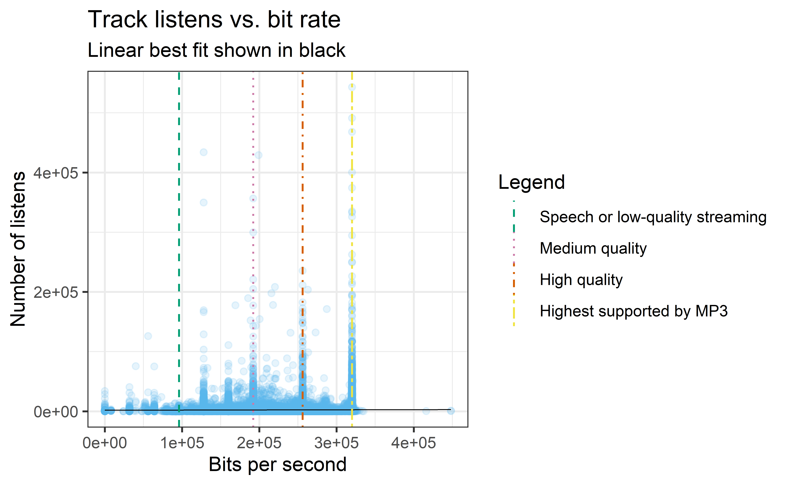

library(tidyverse)
library(ggplot2)
library(janitor)
library(sf)
if(!require("maps")) {install.packages("maps")}
library(maps)
if(!require("rnaturalearth")) {install.packages("rnaturalearth")}
library(rnaturalearth)Let’s create some data visualizations with R using metadata from the Free Music Archive.
Dataset information
The dataset is called “FMA: a dataset for music analysis”. Specifically, I will be investigating track (song) metadata from the Free Music Archive. The metadata dataset was downloaded from GitHub, and it is also archived in the Library of Congress. It is listed under a CC BY 4.0 License, and a formal citation can be found below. Many thanks to the dataset creators, Michaël Defferrard, Kirell Benzi, Pierre Vandergheynst, and Xavier Bresson. I’ve looked at this dataset before, though never in R!
Tracks.csv contains metadata for 106,574 tracks in the full Free Music Archive dataset. Each row represents one song, also called a track. Columns contain song metadata, and columns of interst are listed below. Metadata is not complete for all songs, and rows missing data of interest will be dropped.
Selected columns (as they are labeled after cleaning process) are as follows:
artist_latitude: Latitude information for a given artist, available for ~23% of the dataset.artist_longitude: Longitude information for a given artist, available for ~23% of the datasettrack_bit_rate: Bit rate (number of bits per unit of time) of a track, commonly used as an indicator of audio quality.track_listens: Number of times a track has been listened to as of archiving
Setup
Run the following libraries.
And load the needed data.
data <- read_csv("./data/tracks.csv") %>%
select(1,22,23,25,34,48)Data cleaning
The headers for this data were multi-line when imported, so they need to be combined and cleaned.
clean_data <- data %>%
# Fix column names
rename(
"track_id" = 1,
"artist_id" = 2,
"artist_latitude" = 3,
"artist_longitude" = 4,
"track_bit_rate" = 5,
"track_listens" = 6
) %>%
# Remove extra rows from multi-line header
drop_na(track_id) %>%
# Make all columns numeric for analysis
mutate(
track_id = as.numeric(track_id),
artist_id = as.numeric(artist_id),
artist_latitude = as.numeric(artist_latitude),
artist_longitude = as.numeric(artist_longitude),
track_bit_rate = as.numeric(track_bit_rate),
track_listens = as.numeric(track_listens)
)
glimpse(clean_data)Rows: 106,574
Columns: 6
$ track_id <dbl> 2, 3, 5, 10, 20, 26, 30, 46, 48, 134, 135, 136, 137, …
$ artist_id <dbl> 1, 1, 1, 6, 4, 4, 4, 4, 4, 1, 52, 52, 53, 53, 54, 54,…
$ artist_latitude <dbl> 40.05832, 40.05832, 40.05832, NA, 51.89593, 51.89593,…
$ artist_longitude <dbl> -74.405661, -74.405661, -74.405661, NA, 0.891874, 0.8…
$ track_bit_rate <dbl> 256000, 256000, 256000, 192000, 256000, 256000, 25600…
$ track_listens <dbl> 1293, 514, 1151, 50135, 361, 193, 612, 171, 173, 943,…Now we can make some quick visualizations!
Visualization 1: World map of artists
The code below generates a world map (using the Robinson projection) showing the latitude and longitude for all artists who included that information in the dataset. Notably, this is only about 23% of the artists listed.
crs_use <- "+proj=robin"
point_data_sf <- clean_data %>%
select(artist_id, artist_longitude, artist_latitude) %>%
drop_na() %>%
st_as_sf(coords = c("artist_longitude", "artist_latitude"), crs = 4326) %>%
st_transform(crs = crs_use)
world_sf <- ne_countries(returnclass = "sf") %>%
st_transform(crs = crs_use)
ggplot(data = NULL) +
geom_sf(
data = world_sf,
color = "#e0f3db",
fill = "#a8ddb5"
) +
coord_sf(crs = crs_use) +
geom_sf(
data = point_data_sf,
color = "#000000",
size = 1,
alpha = 0.25
) +
labs(
x = NULL,
y = NULL,
title = "World map of artist locations",
subtitle = "Using a Robinson Projection",
) +
theme(panel.background = element_rect(fill = '#43a2ca'))
This visualization tells us that our data can only be generalized for the US and Europe. Colors were chosen using ColorBrewer to ensure that they are legible for people who are colorblind. A Robinson projection was used to more naturally portray the entire earth on one image. It is “neither equal-area nor conformal”, a compromise (“Robinson projection”, n.d.)
Visualization 2: Audio quality and track popularity
The code below generates a scatter plot of track listens vs. track bit rate. Bit rate is a common indicator of audio quality. I am curious about whether better audio quality makes a track more popular.
bit_listen_data <- clean_data %>%
select(track_id, track_bit_rate, track_listens) %>%
drop_na()
ggplot(
bit_listen_data,
aes(x = track_bit_rate, y = track_listens)
) +
geom_point(color = "#56B4E9", alpha = 0.15) +
geom_smooth(method = lm, se = FALSE, color = '#000000', size = .25) +
geom_vline(
aes(xintercept = 96000, color = 'Speech or low-quality streaming'),
linetype = 'dashed'
) +
geom_vline(
aes(xintercept = 192000, color = 'Medium quality'),
linetype = 'dotted'
) +
geom_vline(
aes(xintercept = 256000, color = 'High quality'),
linetype = 'dotdash'
) +
geom_vline(
aes(xintercept = 320000,color = 'Highest supported by MP3'),
linetype = 'twodash'
) +
scale_color_manual(
name='Legend',
breaks = c(
'Speech or low-quality streaming',
'Medium quality',
'High quality',
'Highest supported by MP3',
'Line of best fit'
),
values=c(
'Speech or low-quality streaming'='#009E73',
'Medium quality'='#CC79A7',
'High quality'= '#D55E00',
'Highest supported by MP3' = '#F0E442',
'Line of best fit'='#000000'
)) +
labs(
x = "Bits per second",
y = "Number of listens",
title = "Track listens vs. bit rate",
subtitle = "Linear best fit shown in black"
) +
theme_bw()
Colors were taken from the Wong color palette as listed on Coloring for Colorblindness to be accessible to those who are colorblind. The linear best fit line shows that there is a negligible relationship between a track’s bit rate and its listens.
Conclusions
By completing some straightforward data visualization, we were able to check the geographic distribution of this dataset and to test a hypothesis about audio quality and song popularity. A good start to the exploratory data analysis!
References
Alikhan, N.-F. (2022, May 20). Variations on map projections in R. Happykhan. https://happykhan.com/posts/map-projections-in-r/
Bit rate. (n.d.). In Wikipedia. Retrieved December 12, 2024, from https://en.wikipedia.org/w/index.php?title=Bit_rate&oldid=1261412342
Brewer, C., Harrower, M., Sheesley, B., Woodruff, A., & Heyman, D. (2013). ColorBrewer: Color advice for maps. https://colorbrewer2.org/
Defferrard, M., Benzi, K., Vandergheynst, P., & Bresson, X. (2017). FMA: A dataset for music analysis [Dataset]. https://github.com/mdeff/fma.
Kobus, L. (2021). Sheet music EC2 [Graphic]. Wikimedia Commons. https://commons.wikimedia.org/wiki/File:Sheet_music_EC2.jpg
Nichols, D. (n.d.). Coloring for Colorblindness. Retrieved December 12, 2024, from http://www.davidmathlogic.com/colorblind/
Robinson projection. (n.d.). In Wikipedia. Retrieved December 12, 2024, from https://en.wikipedia.org/w/index.php?title=Robinson_projection&oldid=1255419564